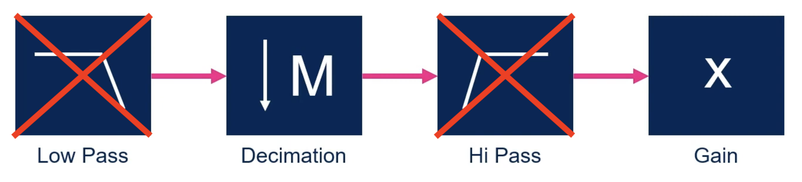

Conversion des données PDM → PCM
Le PCM
Le PCM (Pulse Code With Modulation), est un signal numérique produit à la suite d’une chaîne d’opération : Échantillonnage, quantification et codage.
Comme on peut le constater sur la figure suivante le signal est échantillonné à une fréquence fe et chaque échantillon représente une impulsion à une certaine amplitude.

Si l’on compare l’allure d’un signal PDM à celle d’un signal PCM, on remarque 2 différences principales :
- La fréquence d’échantillonnage du signal PDM est plus importante que celle du signal PCM
- Le signal PDM possède des amplitudes binaires (0-1) alors que l’amplitude du PCM est numérique.

Conversion
Conversion selon STM
Il existe plusieurs solutions, pour réaliser une conversion PDM vers PCM. Selon la documentation de STM32 il est conseillé de suivre la procédure suivante :

Il faut dans un premier temps utiliser un filtre passe-bas pour convertir les données PDM en PCM. La conversion se fait grâce à un filtre FIR, l’objectif est de multiplier les échantillons PDM par les coefficients du filtre et de faire une somme pondérée. Au final on se retrouve avec des données numériques, c’est-à-dire un signal PCM

Ce filtre permet également de réduire la fréquence d’échantillonnage, mais potentiellement de manière insuffisente. Pour obtenir la fréquence d’échantillonnage adapté du PCM il faut procéder à une décimation, avec un facteur de décimation approprié.

Notre conversion
Dans le cas du projet, nous avons simplifié la conversion. Nous allons simplement réaliser une décimation. Une décimation tout de même un peu particulière puisqu’en plus de décimer notre signal, on va convertir nos bits en données numériques, c’est-à-dire en PCM.

Comme expliqué précédemment, le PDM est configuré à une fréquence d’échantillonnage de 3,072 MHz, ce qui est beaucoup plus important que la fréquence cible du PCM qui est de 48 kHz. L’objectif est donc de réduire la fréquence du signal PDM.
La décimation permet de réduire la fréquence d’échantillonnage d’un signal en prenant seulement un échantillon tous les n-échantillons :
C’est donc idéal pour notre cas d’utilisation.
Pour déterminer le facteur de décimation on peut appliquer la formule de la figure précédente. Après calcul on trouve un facteur de décimation de 64. Si on prend donc 1 échantillon PDM tout les 64 échantillons, on obtiendra un signal avec une fréquence de 48 kHz.
Seulement, prendre 1 échantillon tous les n-échantillons, permet uniquement de réduire la fréquence d’échantillonnage du signal, pas de convertir en PDM → PCM. On va donc compter tous les bits à 1 dans une trame de 64 bits, ce qui nous permettra d’obtenir une valeur entre 0 et 64.
Au final on obtiendra un signal PCM avec un certain nombre d’impulsions, des amplitudes situées entre 0 et 64 avec une fréquence d’échantillonnage de 48 kHz.

Mise en pratique
Variables
Nous avons besoin d’un certain nombre de variables.
- Le
pdmBufferprésentê à la partie précédente qui contient les valeurs PDM du DMA - Le
pcmBuffer, il contiendra les données PCM converties d’un demi DMA - Le
pcmData, il contiendra toutes les données PCM converties.
#define NB_FRAME_IN_PDM_BUFFERSIZE 20
#define PDM_BUFFERSIZE PDM_NB_SAMBLE_BY_FRAME*NB_FRAME_IN_PDM_BUFFERSIZE
#define PCM_BUFFERSIZE NB_FRAME_IN_PDM_BUFFERSIZE/2
#define PCM_SAMPLING_RATE 48000
#define NB_SEC_OUTPUT 1
#define PCM_NB_SAMPLE (NB_SEC_OUTPUT*PCM_SAMPLING_RATE)
uint8_t pdmBuffer[PDM_BUFFERSIZE];
uint32_t pcmBuffer[PCM_BUFFERSIZE];
uint32_t pcmData[PCM_NB_SAMPLE];
Lecture du DMA
Comme expliqué dans la partie de l’acquisition, nous travaillons en demi DMA pour des soucis de stockage et de conversion en temps réel. Quand un demi DMA est plein, les données PDM sont disponibles pour être converties en PCM.
Il faut donc savoir qu’elle partit du DMA est plein pour procédé à la conversion.
STM nous donne accès à deux fonctions d’interruptions que l’on peut modifier pour mettre des flags à 1.
- Une interruption pour déterminer si la moitié du DMA est plein :
void HAL_SAI_RxHalfCpltCallback(SAI_HandleTypeDef *hsai) - Une interruption pour déterminer si le DMA est plein :
void HAL_SAI_RxCpltCallback(SAI_HandleTypeDef *hsai)
Par exemple si on utilise c’est fonctions d’interruptions avec deux flags, cplt et half. Si half vaut 1 alors la première moitié du DMA est prête, si c’est cplt dans ce cas c’est la seconde.
void HAL_SAI_RxCpltCallback(SAI_HandleTypeDef *hsai){
cplt = 1;
half = 1;
}
void HAL_SAI_RxHalfCpltCallback(SAI_HandleTypeDef *hsai){
cplt = 0;
half = 1;
}
Maintenant qu’on à des flags il ne reste plus qu’à les utiliser pour réaliser le traitement. Si half vaut 1 alors on commence le traitement, si cplt vaut 0 alors on prend la première moitié sinon la seconde.
while (recording){
if(half){
half = 0;
pdm2pcm((uint8_t*)(pdmBuffer+cplt*(PDM_BUFFERSIZE/2)), pcmData);
}
}
Chaque interruption on exécute la fonction de conversion pcm2pdm avec en premier argument les données PDM (données dans le DMA) à convertir et en deuxième argument un tableau contenant les données PCM convertis.
C’est dans le premier argument, où l’on donne le tableau des valeurs pdm qu’il faut spécifier sur qu’elle moitié du DMA on va travaillé.
- Si c’est la première moitié, il suffit de lui donner le tableau
pdmBufferen entier. C’est-à-dire que si notre tableau est de longueur 100, alors on commence à l’élément 0 et dans notre fonction on ira jusqu’à l’élément 49. - Si c’est la seconde moitié, alors on donne le tableau
pdmBuffer+PDM_BUFFERSIZE/2, c’est-à-dire que si notre tableau est de longueur 100, alors on commence à l’élément 50 et dans notre fonction on ira jusqu’à l’élément 99.
Conversion des données
Il est important de noter que dans la partie acquisition, nous avons configuré le SAI avec une longueur de frame de 64 bits et un type de données sur 8 bits. Nos valeurs dans le DMA sont donc sur 8 bits. Nous on souhaite faire la somme du nombre de bit à 1 dans une frame (64-bits), pour cela on va créer un pointeur sur 64 bits vers notre tableau de 8 bits qui contient les données PDM: uint64_t* pdmFrameBuffer = pdmBuffer;
Maintenant que l’on a un pointeur de 64-bits sur notre tableau de 8-bits, on peut parcourir tous les frames de notre acquisition à l’ai d’une boucle for.
Pour compter les bits à 1 on utilise une fonction intégrée au compilateur: __builtin_popcount, cela nous permet donc d’obtenir une valeur entre 0 et 64. Chaque frame de 8 échantillons PDM se retrouve réduit à 1 échantillon PCM.
Il ne faut pas oublier que c'est échantillons sont ajoutés au tableau contenant la totalité des échantillons PCM.
void pdm2pcm(uint8_t* pdmBuffer, uint32_t* pcmData){
uint64_t* pdmFrameBuffer = pdmBuffer;
for (int frameNbr=0; frameNbr<NB_FRAME_IN_PDM_BUFFERSIZE/2; frameNbr++){
pcmData[pcmDataIndex++] = (uint32_t)__builtin_popcount(pdmFrameBuffer[frameNbr]);
}
}
Arrêt de l’enregistrement
Les données d’un demi DMA sont maintenant convertissables à l’aide de notre fonction, mais il reste un problème. On à un tableau pcmData qui à une longueur de 48 000 échantillons, soit 1 seconde d’enregistrement avec une fréquence d’échantillonnage de 48 kHz. Si pcmData est plein, dans ce cas il faut pouvoir arrêter l’enregistrement.
Ce qui nous permet d’avoir le code suivant :
while (recording){
if(half){
half = 0;
pdm2pcm((uint8_t*)(pdmBuffer+cplt*(PDM_BUFFERSIZE/2)), pcmData);
if(pcmDataIndex >= PCM_NB_SAMPLE){
recording = 0;
HAL_SAI_DMAStop(&hsai_BlockA1);
}
}
}